1-1章：ベイズ統計モデリングの基本
2. 統計モデリング
- 身長の分布
3. 統計モデルの有用性
- 一部のデータから全体を推測
1-2章：統計学の基本
2. 記述統計と推測統計
- 記述統計：データの要約
- 推測統計：全体の推測
3. データの種類
- 量的データと質的データ
- 量的データ・数量データ
- 質的データ・カテゴリデータ
- 尺度
- 名義尺度
- 順序尺度
- （感覚尺度）
- （比率尺度）
- 連続型データと離散型データ
- 時系列データとトランザクションデータ
4. 母集団と標本
- 母集団：興味ある対象全体
- 標本：母集団の部分集合, サンプリング（標本抽出）によって得る。サンプリングサイズ＝1回のサンプリングのデータ個数。
- 全数調査と標本調査
- 単純ランダムサンプリング＝無作為抽出：母集団からのランダムな抽出。方法などを特定しない。
5. 確率変数と確率分布
- 確率変数：何らかの確率的法則にしたがって値が変化する量
- そのときの「何らか」が確率分布? -> 1-4でも説明
- 実現値：確率変数の具体的な値。確率変数\(X\)の具現値\(x\)。\(P(X=x)X\)が\(x\)となる確率\(P\)。コインの表裏の確率 -> {\(P(X=1)\), \(P(X=0)\)}={0.5, 0.5}。
6. 単純ランダムサンプリング：「たまたま」の意味
1-3章：確率の基本
2. 標本空間と事象
- 試行：観測や実験
- 標本空間：試行によって起こりうる結果の集合＝Ω（オメガ）
- 事象：標本空間の部分集合＝試行の集合の一部
- 和集合：A⋃B または
- 積集合：A⋂B かつ
- 排反事象
- 空事象
3. 確率
- 事象Aが生起する確率 -> \(P(A)\)
- 主観確率：<->客観確率。Wikipediaによると哲学的問題。
- 確率の功利主義的定義
- 全ての事象：\(0≤P(A)≤1\)
- 標本空間全体を対象とすると確率は1：\(P(\Omega)=1\)
- 排反事象のどれかが起きる確率は、それら事象の確率の和
4. 確率の加法定理
- \(P(A1\cup A2)=P(A1)+P(A2)\)、ただしA1とA2が排反事象のとき
- 背反ではないときは\(P(A\cup B)=P(A)+P(B)-P(A\cap B)\)
5. 条件付き確率
- \(P(A|B)\): 事象Bが起きた下での事象Aの条件付き確率
- \(p(A|B)=\frac{P(A\cap B)}{P(B)}\)
- やや直感的ではない部分。分母にP(B)がくるので、分子の確率よりは必ず大きくなる。雨が降ったという条件の下で雷がなる確率という例が分かりやすい。
6. 確率の乗法定理
- \(P(A\cap B)=P(A|B)P(B)\)
- 雷が落ちて、かつ雨が降る確率。雨が降った時に雷がなるという条件付き確率に雨が降る確率をかける。
7. 独立
- 事象Aと事象Bが独立なら、
- \(P(A\cap B)=P(A)P(B)\)
- \(P(A|B)\)を\(P(A)\)と同じだと考えているということと同義。事象Bが起きたという条件での\(P(A)\)だけど、事象Bと事象Aは独立（関係ない）ので、\(P(A|B)\)と\(P(A)\)は同じということ。
- 簡単のため、独立という仮定を置くことも多い
1-4章：確率分布の基本
2. 確率分布
- 確率分布：確率変数とそれに対応する確率≒分布
- \(X~P(x)\): 確率変数Xが、ある確率分布P(x)に従うという意味
- \(x~P(x)\)と書いたりもする
3. 離散型の確率分布と確率質量関数
- 質的データや離散型データ -> 離散型の確率分布を使う
- 確率質量関数（\(pmf\)）：\(P(X=xi)\)(<-確率変数Xがある実現値xiを取る確率)を計算できる関数\(f(xi)\)のこと
- 公理より
- \(f(x)\ge0\): ある事象が起きる確率は0以上
- \(\sum f(x)=1\): 標本空間確率の和は1
- \(P(a≤X≤b)=\sum_{i=1}^b f(xi)\) iはaからbまで
- Xがa以上b以下である確率はP(a)からP(b)までの和と等しい
4. 連続型の確率分布と確率密度関数
- 連続型データには連続型の確率分布
- ある値に厳密に一致する確率は0
- 確率密度という考え方
- Δx -> 0のとき：xの増加量が0のとき、\(x\ge X\ge x+\Delta x\)を考えると、\(P(x\ge X\ge x+\Delta x)\)は次のように表される
- \(P(x\le X\le x+\Delta x)=f(x)\cdot \Delta x\)：このときΔxは非常に小さいだけで0ではない。Proability Density Function \(pdf\)。
- 一般化：\(P(a\le X\le b)=\int_a^bf(x)dx\) aからbまでの積分
- xの範囲が全てだと積分値は1
- pmfとの違いは実はΣが∫になっただけ（なのでイメージ的には同じようなもの）
5. 確率変数の期待値
- 離散型Xの期待値：\(E(X)=\sum_{x_i=1}^N f(x_i)\cdot x_i\)（xiになる確率 × xiをiが1からNまで足す）
- 連続型Xの期待値：\(E(X)=\int_{-\infty}^\infty f(x)\cdot x dx\)
6. 確率変数の分散と標準偏差
- 離散型：\(V(X)=\sum_{i=1}^Nf(xi)\cdot(xi-E(X))^2\) （期待値を平均とした通常の分散の式）
- 連続型：\(V(X)=\int_\infty^\infty f(x)\cdot(x-E(X))^2 dx\)
- \(SD = \sqrt V(X)\)
7. 確率変数のパーセント点・中央値・四分位点
- パーセント点：Xがxiより小さくなる確率が例えば10%のとき、xiを10％点と呼ぶ。50%のときが中央値。このように?%より小さくなる点のことを下側パーセント点とも呼び、この本では下側パーセント点のみ使われる。
8. 同時分布・周辺分布・条件付き分布
- 同時確率分布＝同時分布＝結合分布：2つの確率変数が同時にある値xiとyiを取る確率分布。確率分布なので確率質量関数の和は1（今は離散的な変数のことを考えている）。
- \(\sum_{i=1}^{m}\sum_{j=1}^{n}P(X=x_i, Y=y_j)=\sum_{i=1}^{m}\sum_{j=1}^{n}p_{ij}=1, i=1,2,...m, j=1,2,...n\)
- 周辺化: 同時分布からある変数を消去する計算のこと。例えば上の例からYを消去する。
- 周辺分布：\(P(X=x_i)=\sum_{j=1}^nP(X=x_i,Y=y_j)=\sum_{j=1}^{n}p_{ij}\) (シグマはjが1からnまで。Xをxiで固定しておいてy1からynまでの和。P37の具体例を見るべき。)
- 条件付き確率分布＝条件付き分布：片方の確率変数を固定した条件での他方の確率分布のこと。yjに固定されているという条件下でのXの確率分布。
- \(P(X=x_i|Y=y_j)=P(X=x_i,Y=y_j)/P(Y=y_j)=P_{ij}/P_j P(X|Y)\)とも書く。
- Yがyjという条件下でのXの確率分布のこと。
- 上の式を変形する（Yの条件付きXの確率分布＝XYの同時分布/Yの確率分布という式をXYの同時分布＝Yの条件付きXの確率分布・Yの確率分布に変形）
- \(P(X=x_i,Y=y_j)=P(X=x_i|Y=y_j)P(Y=y_j)\)
- そうすると、周辺化の式も書き換え可能
- 周辺化によるXの確率分布：\(P(X=xi)=\sum_{j=1}^nP(X=x_i|Y=y_j)P(Y=y_j)\)
- Xの確率分布=Xの条件付き分布・Yの確率分布
9. 離散型の確率分布：離散位置用分布
- すべてが同じ確率を持つ分布。サイコロの目。
10. 離散型の確率分布：ベルヌーイ分布
- 2つの結果しか生じないもの。コインの裏表。
- 一方を成功確率と呼ぶ。
- 一方の確率が高いことを認める（そういう場合もある）
- 成功率p, 成功を1、失敗を0としたとき
- \(Bernoulli(X=1)=p\)
- \(Bernoulli(X=0)=1-p\)
11. 母数
- 母数＝パラメータ
- 例：ベルヌーイ分布の場合、成功確率pが母数
12. 離散型の確率分布：二項分布
- ベルヌーイ分布に従う独立な試行を複数回実施したときの確率分布
- 表が出る確率pのコインをN回投げる、のような状況で、表がx回出る確率
- \(Binom(X|N,p)={}_N C_x\cdotp^x\cdot(1-p)^{N-x}\): 母数pのN回の試行でXがxになる確率分布。
- e.g., 0.2の確率で表が出るコインを10回投げて10回表が出る確率、のような事象
- matlab関数だと
- x=0:10;
- y=binopdf(x,10,0.5)
- figure, line(x,y)
- x=0:10;
- 期待値：E(X)=Np
- 分散：V(X)=Np(1-p)
★二項分布
# 式から
p<-0.3
N<-8
x<-c(0:N)
y<-choose(N,x)*p^x*(1-p)^(N-x)
plot(x,y,type='l')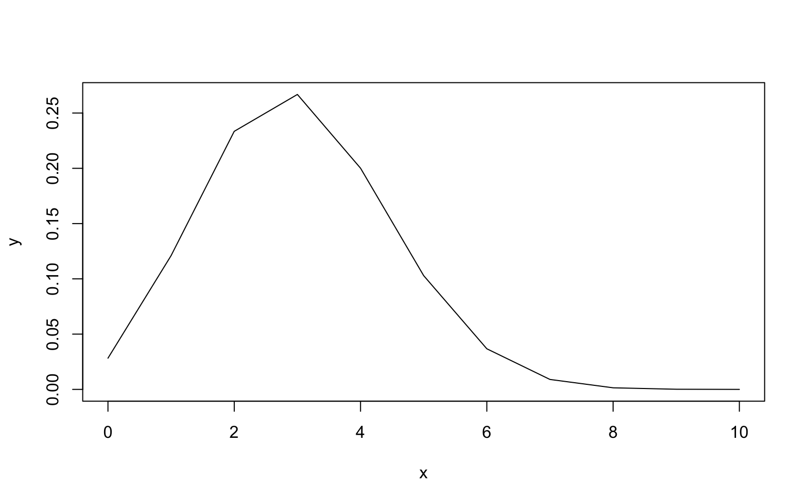
# 関数で
x<-c(0:8)
y<-dbinom(x,8,0.3)
plot(x,y,type='l')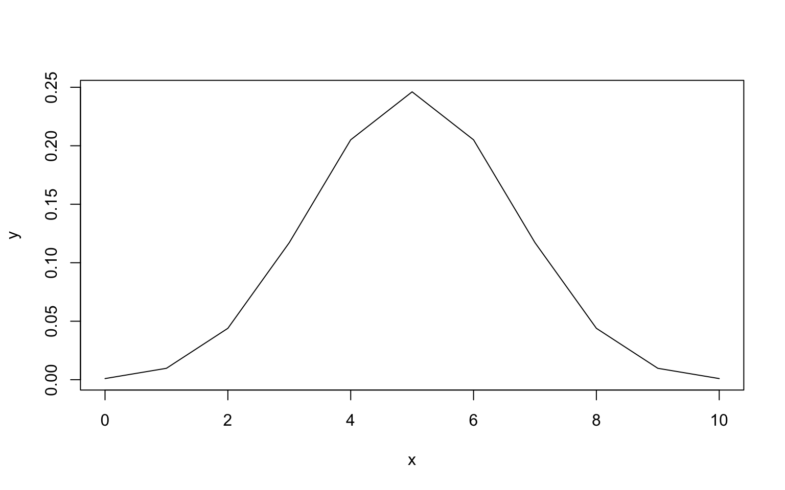
13. 離散型の確率分布：ポワソン分布
- 0または正の整数をとるデータの確率分布
- ただし、Nが大きく、λが非常に小さいときにポアソン分布に従うとされる
- 野外で特定の虫を発見する確率：探す事象（N）は大きい。特定の虫を発見できる確率（\(\lambda\))は非常に小さい
- クラス内でのテストの得点の場合、Nもさほど大きくなく、特定の点数になる確率が非常に小さいわけでもないので、ポアソン分布には従わない。
- ただし、Nが大きく、λが非常に小さいときにポアソン分布に従うとされる
- 発見個体数Xが期待値λ（ラムダ）のポアソン分布に従うとき、
- Poisson(X|λ)=(e-λx)/x!
★ポワソン分布
# 式から
lambda<-5
x<-c(0:20)
y<-exp(-lambda)*lambda^x/factorial(x)
plot(x,y,type='l')
# 関数で
lmbd<-5
x<-c(0:20)
y<-dpois(x,lambda=lmbd)
plot(x,y,type='l')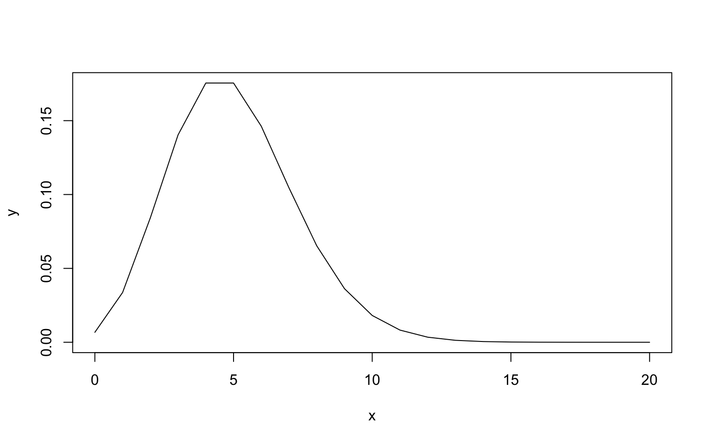
14. 連続型の確率分布：連続一様分布
- ある範囲内で常に等しい確率密度を持つ分布
- \(Uniform(X|a,b)=1/b-a\)
15. 連続型の確率分布：正規分布とその周辺
- 期待値\(\mu\)、分散\(\sigma^2\)のとき、下の式。
- \(Normal(X|\mu, \sigma^2) = \frac{1}{\sqrt{2\pi\sigma^2}}exp(-\frac{(x-\mu)^2}{2\sigma^2})\)
- 標準正規分布：\(\mu\)=0, \(\sigma^2\)=1の正規分布
★正規分布
v<-1
m<-0
x<-seq(-5,5,0.01)
y<-(1/sqrt(2*pi*v))*exp(-(x-m)^2/(2*v))
plot(x,y,type='l')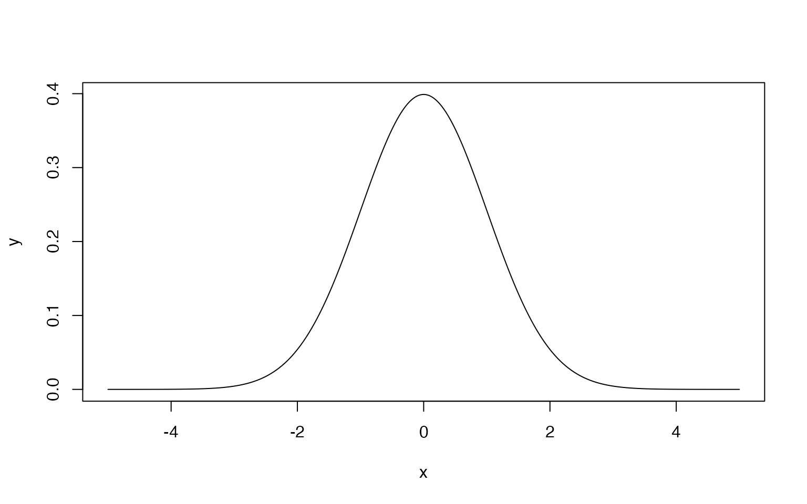 - 中心極限定理 -「平均\(\mu\)、分散\(\sigma^2\)の、独立で同一な確率分布」から得られた\(N\)個の確率変数の合計値\(X_{sum}\)は、\(N\)が大きいときに正規分布\(Normal(N\mu,N\sigma^2)\)に従う - 個々の確率分布の平均\(mu\)、分散\(sigma^2\)ということが変わらず、しかも試行回数が多ければ、個々の分布の形がどのようなものでも、その合計値\(X_{sum}\)は平均\(N\mu\), 分散\(N\sigma^2\)の正規分布に従う＝個々の試行で得られる平均値は平均\(\mu\)、分散\(\sigma^2\)の正規分布に従うことになる（Nで割るから）。 - 正規分布：無数の誤差の反映と考える - 対数正規分布：Xが正の値しか取らない場合の正規分布 - \(f(X)=\frac{1}{\sqrt{2\pi\sigma^2}x}exp(-\frac{(log(x)-\mu)^2}{2\sigma^2})\)
★対数正規分布
v<-1
m<-0
x<-seq(0,3,0.01)
y<-1/(sqrt(2*pi*v)*x)*exp(-(log(x)-m)^2/(2*v))
plot(x,y,type='l')
- ガンマ分布
- \(f(X)=\frac{1}{\Gamma(k)\theta^k}x^{k-1}e^{-\frac{x}{\theta}}\)
- \(\Gamma(z)=\int_0^\infty t^{z-1}e^{-t} dt\)
- ガンマ関数の実装が分からないのでガンマ分布関数を使ってプロット
- shape: shape paremeter
- scale: scale parameter
- 期待値
- \(\mu=shape * scale\)
- \(\sigma^2=shape * scale^2\)
- \(f(X)=\frac{1}{\Gamma(k)\theta^k}x^{k-1}e^{-\frac{x}{\theta}}\)
★ガンマ分布
shp<-2
scl<-2
x<-seq(0,10,0.01)
y<-dgamma(x,shape=shp, rate=1/scl)
plot(x,y,type='l')
1-5章：統計モデルの基本
2. モデルとは何か
- モデル：観測したデータを有無出す確率的な過程を簡潔に記述したもの (Upton and Cook, 2010)
- モデリング＝モデルを作る行為
- 現象の理解、将来の予測
- 数理モデル：数式
- 確率モデル：確率的な表現を使った数理モデル
- 統計モデル：データに適用するように作られた確率モデル
3. コイン投げモデルと白玉黒玉抽出モデル
- どちらも二項分布で表現できる
- \(Y\sim Binom(10,p)\): 表が出る回数Yは試行回数10で成功確率（ここでは表）pの二項分布に従う
4. 確率分布と確率密度関数、確率質量関数
- 確率分布＝データをうみ出す過程
- 確率は確率密度関数・確率質量関数で計算できる
5. 正規分布を用いたモデル
- ビールの売り上げを正規分布でモデル化
- \(\mu\)と\(\sigma^2\)という2つのパラメータ（母数）
- \(Y\sim Normal(\mu,\sigma^2)\)
6. 説明変数を導入したモデル
- 応答変数、説明変数
- ビールの売り上げ
- 気温0℃のときの売り上げ：\(\beta_0\)
- 気温1℃上昇ごとの売り上げ増加：\(\beta_1\)
- \(\mu_i\sim \beta_0 + \beta_1 + x_i\)
- \(Y_i\sim Normal(\mu_i,\sigma^2)\)
- 個人的にもう一つピンときてないのでやってみた。
- 下の2つのヒストグラムを描いてみる
- 平均が (850 x 気温 + 3500)円、標準偏差が1000円 の正規分布に従うデータ。気温は平均20℃、標準偏差3の正規分布に従うこととし、ある気温のときに100データ、100種類の気温について集め、合計10000データ。
- 平均が20000円、標準偏差が1000円の正規分布に従うデータを100個ずつ、100回取得。合計10000データ。
- 結果起きたこと
- 10000データの平均値はあまり違いはない
- 分散が大きく異る
- ただし、どちらも正規分布に従うように見える
- データだけから考えると、単に分散が大きい正規分布に見える
- けど、実は温度というパラメータの影響を受けている
★正規分布に従うけど、気温による線形の影響も受ける売り上げの分布
b0<-3000
b1<-850
layout(matrix(1:2, ncol=2))
rdata1<-numeric()
rdata2<-numeric()
tp<-numeric()
for (rp in 1:100){
tp[rp]<-rnorm(1,mean=20,sd=3)
rdata1<-append(rdata1,rnorm(100,mean=20000,sd=1000))
rdata2<-append(rdata2,rnorm(100,mean=b1*tp[rp]+b0,sd=1000))
}
hist(rdata1,xlim=c(min(rdata2),max(rdata2)),main=mean(rdata1))
hist(rdata2, xlim=c(min(rdata2),max(rdata2)),main=mean(rdata2))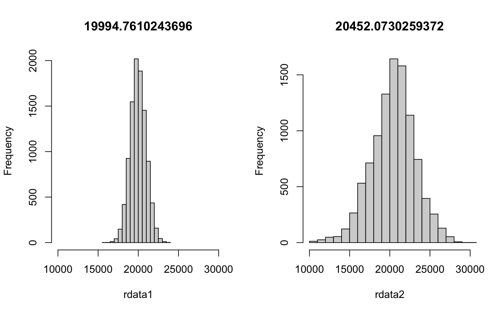
7. 確率モデルとデータの対応づけ
8. 尤度
- 尤度：パラメータが所与であるという条件における、標本が得られる確率
- \(P(y|\theta)\): パラメータ\(\theta\)のときに\(y\)となる確率
- 標本\(y\)を固定するとパラメータ\(\theta\)の関数とみなせる＝尤度関数
- Wikipediaの尤度関数は比較的分かりやすい気がする
- 得られたデータがあって、そこからパラメータを考える
9. 確率モデルと尤度の関係
- モデル\(Y\sim VBinom(10,p)\): 二項分布に従う確率pの事象が10回中にでる回数Y
- 2回出たとすると、尤度関数は
- 尤度関数:\({}_{10} C_2\cdot\theta^2\cdot(1-\theta)^{10-2}\)
- これを解いて\(\theta\)を求める
1-6章:ベイズ推論の基本
2. 不確実性を確率で表現
- 不確実性の定量化：確率を使う
3. 事前確率と事後確率
- 事前確率：データがない状態（データを取る前）に想定する確率
- 事後確率：データを得た後に想定する確率→データを所与とした条件付き確率として表す
- 正しいコインとイカサマコイン。イカサマコインは表が出やすい。どちらのコインか分からない状態。イカサマコインであるという仮説\(H_1\)、正しいコインであるという仮説\(H_2\)。一度コインを投げたら表が出た。このデータをDとする。
- 事前確率\(P(H_1)\)
- 事後確率\(P(H_1|D)\)Dが得られたもとで\(H_1\)であるという確率
4. 理由不十分の原則
- 多くの場合事前情報はない（コインがイカサマか正しいものかに関する情報がない）
- 理由不十分の原則：事前情報がなかったら、各仮定に等しい確率を与える
- \(P(H_1)=0.5, P(H_2)=0.5\)
5. 尤度、周辺尤度
- 尤度（復習）：あるパラメータ条件で標本が得られる確率＝ある仮定のもとで、データが得られる確率
- 例えば、正しいコインであるという仮定のもとで、表が出る確率
- 周辺尤度：データが得られる平均的確率
- 表が出る確率：イカサマコイン＝0.75, 正しいコイン＝0.5
- 周辺尤度\(P(D)=P(D|H_1)P(H_1)+P(D|H_2)P(H_2)=0.625\)
6. ベイズの定理
- \(P(H_1|D) = \frac{P(D|H_1)P(H_1)}{P(D)} = P(H_1)\frac{P(D|H_1)}{P(D)}\)
- \(事後確率 = 事前確率 \times \frac{尤度}{周辺尤度}\)
- \(表が出たという事象のもとでイカサマコインである確率 = データを取る前のイカサマコインである確率 \times \frac{イカサマコインであるという仮定のもとで表が出る確率}{表が出る平均的確率}\)
- コインの例で表が出た後の事後確率：\(P(H_1|D)=0.5\times \frac{0.75}{0.625}=0.6\)
- ベイズ更新：データから、ベイズの定理をもとに事前確率を事後確率に更新すること
- ベイズ推論：ベイズ更新によって興味の対象となる条件付き確率などを得ること
- 次の試行ではさっきの事後確率を事前確率として計算する
7. ベイズの定理の導出
- \(P(D\cap H_1) = P(D|H_1)P(H_1) = P(H_1|D)P(D)\)
- \(D\)でかつ\(H_1\)という確率＝\(H1\)のもとで\(D\)が得られる確率\(\times H1\)である確率=\(D\)であるときに\(H_1\)である確率\(\times\)Dである確率
- \(P(H_1)\)=0.5, \(P(D|H_1)\)=0.75, \(P(H_1|D)\)=0.6, \(P(D)\)=0.625
- \(P(D|H_1)P(H_1) = P(H_1|D)P(D)\)をP(D)で割る
- \(P(H_1|D)P(D)=\frac{P(D|H_1)P(H_1)}{P(D)}\)<-ベイズの定理
- さらに周辺尤度を展開
- \(P(H_1|D)P(D)=\frac{P(D|H_1)P(H_1)}{\Sigma_{i=1}^{2}P(D|H_i)P(H_i)}\)
8. ベイズの定理と統計モデルの関係
- パラメータは確率分布であると想定、連続型
- 事前確率分布、事前分布（さっきの例のように事前確率0.5というんじゃなく、ということ？）
- 事後確率分布、事後分布
9. 無情報事前分布
- 理由不十分の原則みたいなもの
- 事前分布に何の想定もおけないときは、無情報事前分布を使う
- 分散が大きい正規分布とか幅の広い一様分布
- パラメータがどういう値は分からないという状態
- ベイズの定理を使って（データをもとにベイス推論を行うことで）分布を狭くする
- この本では幅の広い連続一様分布を使うことが多い
- でもパラメータの範囲がわかっている部分（例えば0より大きい値をとる）はそれを使う
10. 事後分布の計算例と事後分布のカーネル(?)
- 5つの売り上げデータ\(x_1=2.4, x_2=3.2, x_3=2.2, x_4=4.6, x_5=3.3\)
- ベイスに必要なのは事前確率（事前分布）、尤度、周辺尤度
- 確率モデルとして平均不明、分散1の正規分布を想定
- \(X\sim Normal(\theta, 1)\)
- \(\theta\)の事後分布を求めたい
- 事前分布：分散が10000の正規分布(通常はもっと大きい分散にするらしい)
- まずは尤度関数(標本を固定したときのパラメータの関数)を数式で表す
- \(Normal(X|\theta, 1)=\frac{1}{2\pi}exp(-\frac{x-\theta^2}{2})\): 通常の正規分布, 分散が1だから簡単になってる
- 尤度は各データ分の確率の積
- 尤度は「ある仮定が所与という条件のもとでデータが得られる確率」
- ここではデータが5つ得れらていて、確率分布があるから、それらの確率が分かる。全ての積が尤度となる。
- \(f(D|\theta)=\Pi^5_{i=1}\frac{1}{2\pi}exp(-\frac{(x_i-\theta)^2}{2})\): iが1から5までの総乗
- 次は事前分布
- \(f(\theta)=\frac{1}{\sqrt{20000\pi}}exp(-\frac{\theta^2}{20000})\): 分散が20000, 平均が\(\theta\)の正規分布
- 事後分布は\(尤度\times 事前分布\)に比例するという式を書く。比例するは\(\propto\)で。
- \(f(\theta|D)\propto(D|\theta)f(\theta)\)
- \(= [\Pi^5_{i=1}\frac{1}{\sqrt{2\pi}}exp(-\frac{(x_i-\theta)^2}{2})]\cdot[\frac{1}{\sqrt{20000\pi}}exp(-\frac{\theta^2}{20000})]\): 尤度\(\times\)事前分布
- 上の式の右辺をカーネルと呼ぶ（尤度を周辺尤度で割ってない）
- 周辺尤度を省略してもいい。その理由。
- 周辺尤度の計算は難しい
- 難しいものを求めなくてもいい
- \(x_i\)にはデータが入る（事後だから）ので、カーネルは\(\theta\)の関数
- \(Kernel(\theta)\)
- 周辺尤度は正規化定数
- 正規化定数：確率の合計を1にするように指定。パラメータを含まない。積分計算で出るけど、大変。
- 周辺尤度を省略してもいい。その理由。
- \(X\sim Normal(\theta, 1)\)
11. モデルに基づく現象の解釈
- ビールの売り上げの例
- \(\mu_i=\beta_0+\beta_1\cdot x_i\)
- \(Y\sim Normal(\mu_i,\sigma^2)\)
- パラメータ\(\beta_0, \beta_1\)がどういう値を取るか＝データをとったあとの事後分布はどうなるかを知ることができれば解釈に繋がる。特に\(\beta_1\)。
- 事後分布の分散が小さいと使えるけど、大きいと使えない（-10から10まで分布してたらどういう値か分からない）
- データとの適合度も重要。
12. ベイズ推論の難点とMCMC
- パラメータが多いと事後分布の計算が大変。積分できないこともある。積分できないと確率が求まらない。
- そこで登場するのがMCMC。次章へ。
1-7章: MCMCの基本
1. 概要
- MCMCと統計モデリング
- MCMCの乱数生成の基本
- MCMCの利用方法
2. MCMCとは何か
- マルコフ連鎖モンテカルロ法（Markov Chain Monte Carlo）
- 乱数生成の手法としてマルコフ連鎖を使う
- 離散時間マルコフ連鎖: ある時点の値は1時点前の値\(\textbf{のみ}\)に依存
- モンテカルロ法：疑似乱数を使って何らかの性質を求める方法
- 確率的に変化するランダムな値の例↓ 平均m 分散vの正規分布（左）に従ってn個生成された乱数のヒストグラム（右）
★確率分布に従う乱数の例
layout(matrix(1:2, ncol=2))
m<-0
v<-1
n<-10000
x<-seq(m-sqrt(v)*4,m+sqrt(v)*4,0.01)
y<-(1/sqrt(2*pi*v))*exp(-(x-m)^2/(2*v))
plot(x,y,type='l')
rdata<-rnorm(n, m, sqrt(v))
hist(rdata, breaks=12)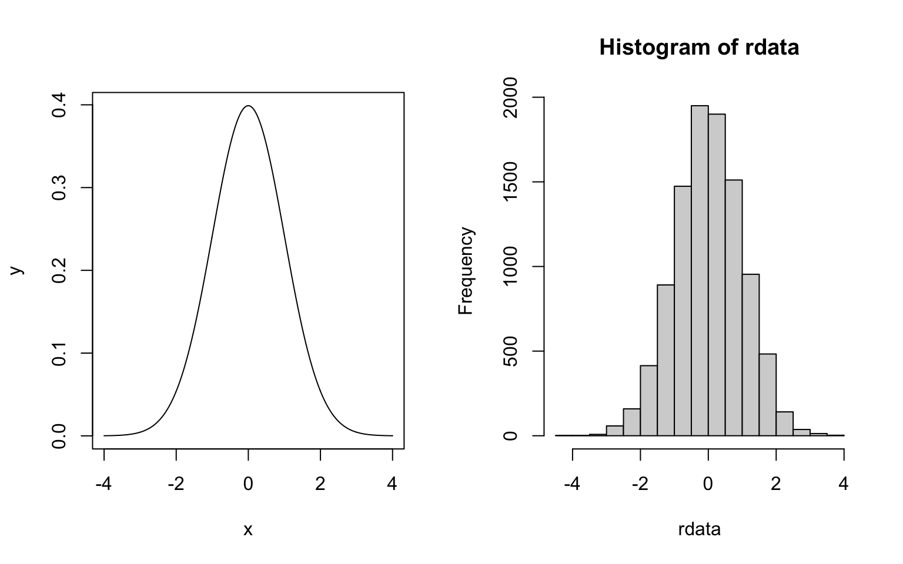
3. MCMCと統計モデリングの関わり
- そもそも
- MCMC -> 単に乱数の生成方法の一つ
- ただし、事後分布（6章「データが得られた後に想定する分布」）に従う乱数の生成に使えるところが偉い。
- ベイズの定理に従って作られた（パラメータの）事後分布は複雑な場合が多い（＝パラメータに関して何らかの情報を得るのが難しい。前章のビールの例のようにパラメータ\(\beta_1\)の\(2.5%\)点の値はコレ、とか分かればいいけど、普通は分からない）
- なので、その分布に従う乱数を生成。乱数をもとに事後分布を作成。＝分布を評価するのではなく、分布に従って生成した値たちを評価＝対象が式じゃなくて値たちなら、点推定もできるし評価が簡単。
- ここで点推定が出てきて個人的にはちょっと混乱した（パラメータの点推定はしないんじゃないの？）けど、生成した確率分布の代表値を点推定で出すことは普通にあるということっぽいです。
- ここで発表はちょっと脇道に逸れます。ここからしばらくは頻度主義（求めたいパラメータは真の値を持つ、という考え方の統計）の例ですが、緑本から：MCMCを理解するための補足説明
4. モンテカルロ法
- 乱数を利用した計算法（緑本, P177）
- 乱数を生成する手法（馬場本）
- 乱数生成する方法はたくさんあるけど、事後分布に従う乱数を発生できるのがMCMCということ
5. モンテカルロ積分
- 第6章「事後分布の期待値を出すためには、その確率密度関数を積分しなきゃいけないけど、すごく大変」
- ここではそれをどう回避しているかを説明
- 事後分布のパラメータ\(\theta\)の期待値を知りたいとき、事後分布に従う乱数\(\hat{\theta}\)が十分な数（例えば1000個）生成されるなら、\(\theta\)の期待値は\(\frac{\Sigma^{1000}_{i=1} \hat{\theta}}{1000}\)。つまり乱数\(\hat{\theta}\)の平均値。ということで積分計算が不要になる。
6. マルコフ連鎖
- 時点によって変化していく確率変数
- 遷移核：1時点前の値を所与としたと条件付き確率
- スマホの例
- ある時点でスマホユーザーがとる選択は
- 同じ会社のものを使い続ける
- 別な会社のものに乗り換える
- ある時点\(t\)で、どの会社のスマホを使ってるかは、それまで使っていたスマホ会社を所与とした条件つき確率
- このとき遷移核
- A社だった人がA社：\(P(X_t=A社|X_{t-i}=A社)=0.4\)
- A社だった人がB社：\(P(X_t=B社|X_{t-i}=A社)=0.6\)
- B社だった人がB社：\(P(X_t=B社|X_{t-i}=B社)=0.1\)
- B社だった人がA社：\(P(X_t=A社|X_{t-i}=B社)=0.9\)
7. 定常分布
- さっきのスマホの例だと、最終的にA社が多くなって落ち着きそう -> A社60%で落ち着くらしい
- やってみよう
★スマホユーザーの例
# a地域とb地域では初期比が異なるけど、遷移核が同じならそのうち同じ値に収束するという例
na<-1 # a地域人数
nb<-1 # b地域人数
aAi<-0.9 # a地域におけるA社初期比
aBi<-1-aAi # a地域におけるA社初期比
bAi<-0.2 # b地域のA社初期比
bBi<-1-bAi # b地域のB社初期比
nrp<-30 # 繰り返し数
rAA<-0.4 # 以下の4行は遷移核
rAB<-0.6
rBB<-0.1
rBA<-0.9
naA<-numeric(nrp)
naB<-numeric(nrp)
nbA<-numeric(nrp)
nbB<-numeric(nrp)
naA[1]<-na*aAi
naB[1]<-na*aBi
nbA[1]<-nb*bAi
nbB[1]<-nb*bBi
for(rp in 2:nrp){
naA[rp]<-naA[rp-1]*rAA+naB[rp-1]*rBA
naB[rp]<-naA[rp-1]*rAB+naB[rp-1]*rBB
nbA[rp]<-nbA[rp-1]*rAA+nbB[rp-1]*rBA
nbB[rp]<-nbA[rp-1]*rAB+nbB[rp-1]*rBB
}
layout(matrix(1:2, ncol=2))
plot(naA, type='l',col='red',ylim=c(0,1.0))
par(new=T)
plot(naB, type='l',col='blue',xlab='',ylab='',ylim=c(0,1.0))
plot(nbA, type='l',col='red',ylim=c(0,1.0))
par(new=T)
plot(nbB, type='l',col='blue',xlab='',ylab='',ylim=c(0,1.0))
8. MCMCが目指すこと
- このようなユーザーからダンラムに選んで調査をすればきっと6:4になるだろう、と推測できる
- 遷移核を適切に決めることができれば、「何か」に従う乱数の生成が可能
- 遷移核をどう適切に決めるか。
9. メトロポリス・ヘイスティングス法（MH法）
- 乱数生成アルゴリズムの一つ。
- ここではランダムウォークMH法
- MH法のアルゴリズム
- この例での変数の使い方
- パラメータ\(\theta\)の分布を生成
- t番目の乱数: \(\hat{\theta_t}\)
- 初期値: \(\hat{\theta_1}\)
- 事後分布: \(f(\theta|D)\)
- データ\(D\)が得られたという条件のもとで、\(\theta\)が取りうる値の確率分布
- 事前分布: \(f(\theta)\)
- 情報がない状態での\(\theta\)の確率分布
- 尤度関数: \(f(D|\theta)\)
- \(\theta\)がある確率分布に従うという条件のもとでデータ\(D\)が得られることの尤もらしさ
- カーネル: \(Kernel(\theta)\)
- \(f(\theta|D)\propto f(D|\theta)f(\theta)=Kernel(\theta)\)
- 事後分布=尤度x事前分布\(\propto\)カーネル
- 手順
- 連続一様分布などに従ってランダムに初期値を決める
- 平均\(0\), 分散\(\sigma\)の正規分布に従う乱数を生成, \(\hat{\theta}_2^{提案}=\hat{\theta}_1+乱数\)
- \(f(\theta_1|D)\)と\(f(\theta_2^{提案}|D)\)の比を算出(\(rate\))。ただし\(rate=\frac{f(\hat{\theta}_2^{提案}|D)}{f(\hat{\theta}_1|D)}=\frac{Kernel(\hat{\theta}_2^{提案})}{Kernel(\hat{\theta_1})}\)
- ここ、本には「事後分布のカーネルがすでに得られているから、カーネルの比を取る的な書き方がされているけど、おそらく話としては、それぞれの\(\theta\)のときの確率の比を取る（それには事後分布の確率密度関数が使える）というのが筋。確率が高ければ提案を採用するという話なので。そのとき、事後分布のままだと分母の正規化定数が邪魔なんだけど、定数だからそれを消したカーネルの比でOKですよ、ということだと思う。
- \(rate\)が1より大きければ提案を採用、1より小さくても\(rate\)の確率で採用。
- 緑本のメトロポリス法との違い
- 乱数生成が確率1/2から正規分布に従う乱数になった、だけ?
- この例での変数の使い方
10. MH法の計算例
- 6-10の5つの売り上げデータの例
- やってみよう!
★メトロポリス・ヘイスティングス法の実装例
layout(matrix(1:2, ncol=2))
nrp<-2000
data<-c(2.4,3.2,2.2,4.6,3.3)
m<-0
v<-1
chain<-4
#knl<-numeric(nrp)
#theta<-numeric(nrp)
knl<-matrix(0,nrow=nrp, ncol=chain)
theta<-matrix(0,nrow=nrp,ncol=chain)
ratio<-1
for (nc in 1:chain){
theta[1, nc]<-runif(1,min=-2,max=2) # -2から2の連続一様分布に従う乱数
for (rp in 1:nrp){
kp<-numeric(length(data))
for (d in 1:length(data)){
kp[d]<-exp(-((data[d]-theta[rp,nc])^2)/2)/sqrt(2)*pi
}
knl[rp,nc]<-prod(kp)*exp(-(theta[rp,nc]^2/20000))/sqrt(20000*pi) #カーネルの計算
if (rp>1){
lr<-knl[rp,nc]/knl[rp-1,nc] # カーネル比（rate）の算出
if (runif(1)>lr){ # 確率rateで提案thetaを採用
#print(lr)
theta[rp,nc]<-theta[rp-1,nc]
knl[rp,nc]<-knl[rp-1,nc]
}
}
if (rp<nrp){
theta[rp+1,nc]<-theta[rp,nc]+rnorm(1,m,v) # 次のthetaの生成, 平均m, 分散vの正規分布に従う乱数を前のthetaにたす
}
}
}
for (wf in 1:chain){
if (wf>1){
par(new=T)
plot(theta[1:nrp,wf],type='l', xlab='',ylab='', col=wf, ylim=(c(min(theta),max(theta))))
}else{
plot(theta[1:nrp,wf],type='l', main=mean(theta), col=wf, ylim=(c(min(theta),max(theta))))
}
}
par(new=F)
for (wf in 1:chain){
if (wf>1){
hist(theta[,wf], col=adjustcolor(wf, alpha.f=0.3), add=TRUE, breaks=seq(floor(min(theta)),ceiling(max(theta)),0.5))
}else{
hist(theta[,wf], col=adjustcolor(wf, alpha.f=0.3), breaks=seq(floor(min(theta)),ceiling(max(theta)),0.5))
}
}
11. MH法の欠点
- 乱数生成のときの分散をどう決めるか
- 大きすぎると提案値が大きくなることが増え、いいところに行きにくい
- 小さすぎるとなかなか変化しなくていいところに行きにくい＝受容率が低い
12. ハミルトニアン・モンテカルロ法（HMC法）
- MH法の欠点を改善
- 受容率をあげつつ、パラメータの変化を大きく保つ
- 提案値をランダムではなく、確率密度の高い領域から選ぶ
- アルゴリズムの質的説明はP.72。stanにはNUTSというHMC法が実装されてるらしい
13. 乱数の取り扱いの注意点
- 各種設定：乱数をいくつ生成するかなど
- 収束の評価：生成された値をどう評価するか
- 乱数の代表値を求める
14. 繰り返し数(iter)の設定
- 乱数の個数。MH法の例ではiter=2000。メトロポリス法ではiter=100000だった。
- stanでは2000が設定されることが多い
15. バーンイン期間(warmup)の設定
- 初期値に依存するので最初の方はあやしい
- 切り捨てて使わない
16. 間引き(thin)の設定
- 生成した乱数を間引く
- 乱数間の自己相関を下げるための工夫
17. チェーン(chains)の設定
- 収束評価のため、乱数生成を何度か繰り返す
- 代表値を比較などして評価
- chains=4を使うことが多い
18. 収束の判定
- 良く使われる判定指標：\(\hat{R}\)
- \(\hat{R}=\frac{同一のチェーン内での乱数の分散の平均値}{異なるチェーンも含めたすべての乱数の分散}\)
- これが1.1より小さくなるまで繰り返す
- chans=1の場合、チェーン内をいくつかに分割して計算
19. 点推定と区間推定
- 点推定：推定値を1点だけ提示->MED, EAP, MAPは点推定
- 区間推定：なんらかの区間を設定して、幅のある推定値を提示
20. ベイズ信用区間
- 乱数を小さい値から並べて2.5%点から97.5%点に該当する範囲
- 95%ベイズ信用区間 / 95%ベイズ信頼区間
21. 事後中央値(MED; posteriori median)
- 事後分布の中央値を採用
22. 事後期待値(EAP; expected a posteriori)
- 事後分布の平均値を採用
23. 事後確率最大値(MAP; maximum a posteriori)
- 事後分布において確率が最大となる点
1-7の補足: 緑本のMCMC
- 緑本 P.171 例題：種子の生存確率
- 観測データ：\(N_i個\)の観察種子のうち、生きていて発芽能力があるものは\(y_i個\)、死んだ種子は\(N-y_i個\)」
- \(N_i\)を\(8\)とし、\(20\)個体について調べる（8個の観察種子のうち、生きてるものは\(y_i\)個、死んでるものは\(8-y_i\)個。これを20本の植物について調べる）
- \(\{y_1,y_2,...,y_{20}\}=\{4,3,4,5,5,2,3,1,4,0,1,5,5,6,5,4,4,5,3,4\}\)
- このとき、種子個体iの生存確率qは?
- ある個体\(i\)の生存種子数が\(y_i\)である確率（ヒストグラム（下図左）を見ると過分散ではないので、二項分布(リンク先はq=0.3の例)と考える＝統計モデル、ただしパラメータqは不明なので、データからそれを求めたい）：\(p(y_i|q)={}_8 C_{y_1} \cdot q^{y_1} \cdot(1-q)^{8-{y_1}}\)
- 過分散：通常の（二項）分布よりも分散が大きいこと。サンプルごとに傾向に違いがあるような場合に見られる。
- 尤度関数：\(L(q)=\prod_i p(y_i|q)\)（パラメータqのときデータ\(y_i\)が得られる確率の総乗） :パラメータq。qが変化すると尤度（モデルのもっともらしさ）が変化する。→尤度が最大になるqを求めればいい。これが真の値の推定値（頻度主義だから真の値がある）\(\hat{q}\)（qハット）=最尤推定量
- 対数尤度関数：\(logL(q) = \Sigma_i\{y_ilog\ q+(8-y_i)\ log(1-q)\}+定数\)（下図右）
- さらに脱線。尤度の説明もう一度。
- 緑本2.4節
- 尤度：あてはまりの良さ
- \(\lambda=3.56\)のポアソン分布に従う\(y_i\)が\(\{y_1,y_2,y_3\}=\{2,2,4\}\)であるときの尤度は\(p(y_1=2|\lambda=3.56)=0.180\), \(p(y_2=2|\lambda=3.56)=0.180\) \(p(y_3=4|\lambda=3.56)=0.190\)より、\(0.180\times0.180\times0.190=0.006156\)となる
- 一般化すると尤度\(L(\lambda)=\prod_{i}^{}p(yi|\lambda)=\prod_{i}\frac{\lambda^{y_i} exp(-\lambda)}{y_i!}\): 尤度は平均\(\lambda\)のポアソン分布における\(y_i\)の確率の総乗として表される
- 尤度関数を対数変換したとき、その値が最も大きい（＝0に近い）とき最も尤度が大きい（＝あてはまりがいい）
- 対数尤度関数の傾きが0になるqを探す（緑本2.4節参照）＝対数尤度関数を偏微分する
- 対数尤度関数をqで偏微分：\(\frac{\partial\ logL(q)}{\partial\ q} = \Sigma\{\frac{y_i}{q} - \frac{8-y_i}{1-q}\} = 0\) ? （全く自信ない）で、ここから\(\hat{q}=\frac{\Sigma{y_i}}{8\times20} = \frac{73}{8\times20}=0.45625\)になるらしい（https://hazm.at/mox/math/statistics/inferential/binomial-distribution.html）
- これで解析的に最尤推定値\(\hat{q}\)を求めることができた!
- 下の対数尤度関数のピークとなるところの\(q\)の値ということ。
★緑本の 「種子の例」のヒストグラムと対数尤度関数
layout(matrix(1:2, ncol=2))
data<-c(4,3,4,5,5,2,3,1,4,0,1,5,5,6,5,4,4,5,3,4)
hist(data,breaks=c(-1:7))
logb<-function(x) sum(log(dbinom(data, 8, x)))
q <- seq(0.2, 0.7, 0.01)
plot(q, sapply(q, logb), type='l')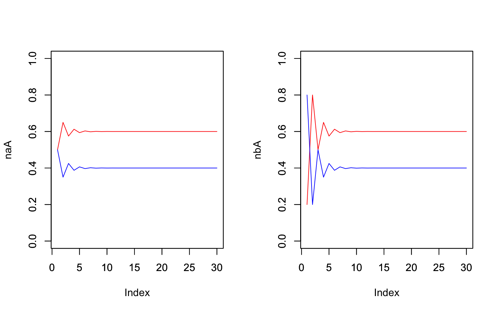
- ここまでで、解析的に最尤推定量\(\hat{q}\)を求めることができたけど、それができない場合はどうするか。分布がややこしかったりすると尤度関数はもっとややこしくて解けなくなることがある。
- ここで、モンテカルロ法的なものが登場
- ふらふら試行錯誤による最尤推定（という例；緑本P173）
- qを離散化→qを連続値ではなく0.01刻みの離散値と考える
- 適当なqの初期値を決め、対数尤度を計算して評価。対数尤度関数に代入するだけ。パラメータはqだけだから計算可能。\(q=0.30\)の場合、\(-46.38\)になる。
- 以下は「ふらふら試行錯誤の最尤推定」手順
- qはとなりの値にしか変化できない（ここで「となりの値」という考え方をするために、qを離散化したのだと思う）->0.30スタートなら0.29か0.31
- 2つの値のうちどちらを選ぶかはランダムに決定し、対数尤度が現在よりも大きければそちらに移動
- 0.31が選ばれた場合、対数尤度は-45.24となり、大きいから採用される -> qは0.31になる
- 仮に0.29が選ばれていれば、対数尤度は-47.62で小さくなってるので、qは0.30に戻る
- 下、適当に実装してみた例。qの初期値(qi)の値を変えても同じ値に収束するのがわかる。
- 緑本ではqを0.01刻みで動かしてるけど、下では0.001刻みにしている。緑本の例のように100回では収束せず400回くらいかかってるけど、当然収束した値は、より真の値に近づく。
★ふらふら最尤推定
nrp<-1000
qi<-0.159
n<-8
data<-c(4,3,4,5,5,2,3,1,4,0,1,5,5,6,5,4,4,5,3,4)
logL<-numeric(nrp)
q<-numeric(nrp)
q[1]<-qi
for (rp in 1:nrp){
lh<-numeric(length(data))
for (d in 1:length(data)){
lh[d]<-choose(n,data[d])*q[rp]^data[d]*(1-q[rp])^(n-data[d])
}
logL[rp]<-log(prod(lh))
if (rp>1){
if (logL[rp]<logL[rp-1]){
q[rp]<-q[rp-1]
logL[rp]<-logL[rp-1]
}
}
if (round(runif(1))){
q[rp+1]<-q[rp]+0.001
}else{
q[rp+1]<-q[rp]-0.001
}
}
plot(q[1:nrp],type='l', main=q[nrp])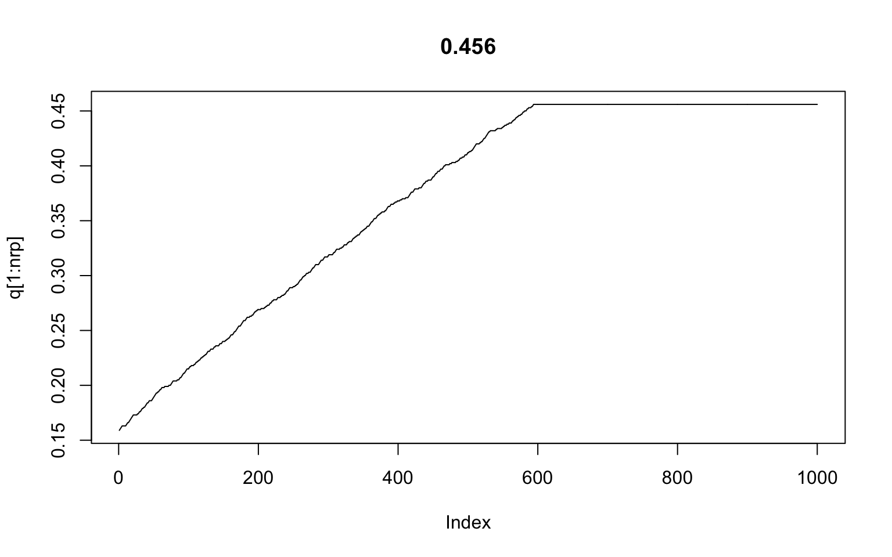
- このように、ランダムに生成した値を仮のqとして尤度を計算、尤度が高くなる場合だけ値を変化させるという方法で最尤値を推定することができた。緑本に書いてるように、ここまでのアルゴリズムは分かりやすさだけを考えた非効率なもの。実際の最尤推定はもっと効率いいそうです。
- これがモンテカルロ法（の一例）。
- メトロポリス法（MCMCアルゴリズムの一つ）
- ふらふら試行錯誤をちょっと修正
- \(q\)の初期値を決める(\(q_i\))
- \(q\)を増やすか減らすかをランダムに決め、新しい値を作る(\(q^新\)とする)
- 尤度を計算。大きくなってたら\(q^新\)を採用する
- — ここまではふらふら試行錯誤と同じ —
- 尤度が小さくなる場合でも、確率\(r\)で\(q^新\)を採用して\(q\)を\(q^新\)に変更。そのときの確率は\(r=\frac{L(q^新)}{L(q)}\)で計算する。尤度が高いほど採用される確率が高まる。手順3のように尤度が高くなっていれば確率が1より大きいから、必ず採用される。
- じゃあ実装してみよう。繰り返し回数(nrp)によってqの平均値は変わってくる。まずは10万回の例。
★メトロポリス法の実装例
layout(matrix(1:2, ncol=1))
nrp<-50000
qi<-0.30
n<-8
data<-c(4,3,4,5,5,2,3,1,4,0,1,5,5,6,5,4,4,5,3,4)
logL<-numeric(nrp)
q<-numeric(nrp)
q[1]<-qi
lr<-1
for (rp in 1:nrp){
lh<-numeric(length(data))
for (d in 1:length(data)){
lh[d]<-choose(n,data[d])*q[rp]^data[d]*(1-q[rp])^(n-data[d])
}
logL[rp]<-log(prod(lh))
if (rp>1){
lr<-exp(logL[rp]-logL[rp-1])
if (runif(1)>lr){
#print(lr)
q[rp]<-q[rp-1]
logL[rp]<-logL[rp-1]
}
}
if (round(runif(1))){
q[rp+1]<-min(0.99,q[rp]+0.01)
}else{
q[rp+1]<-max(0.01,q[rp]-0.01)
}
}
plot(q[1:nrp],type='l', main=mean(q))
hist(q)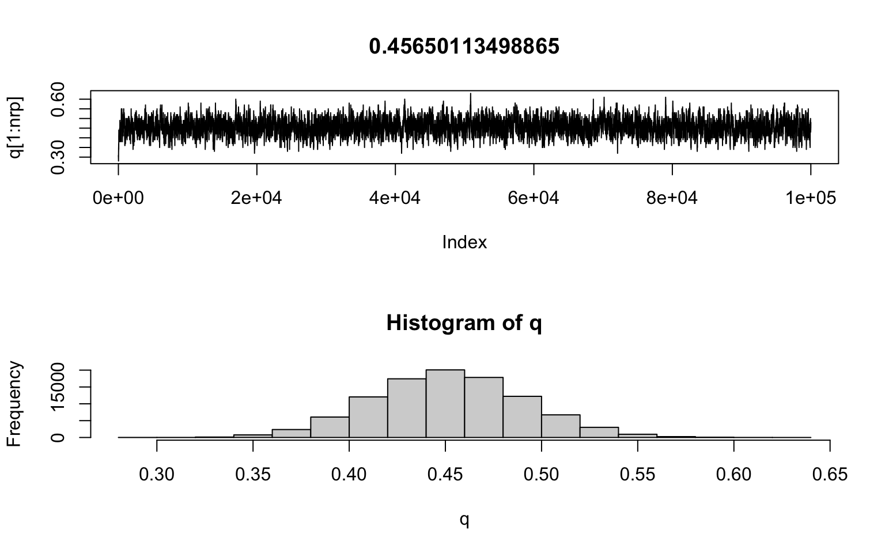
- とりあえず緑本の感じにはなってるので実装例は良さそう。下図は生成したqのヒストグラム。
- MCMCは一意の最尤値に収束するのではなく、変化する値の生成を行う。ただし、だんだんと収束していくことには変わりはない。
- 定常分布
- 上のようなマルコフ連鎖によって生成した変数\(q\)を考えたとき、
- マルコフ連鎖が「一定の条件」1を満たしているとき、\(q\)は定常分布(\(p(q|y_i)\))という確率分布に従う
- そのため、十分な回数生成した変数の分布は定常分布に近似してくれる（上図下。ただし、上図では定常分布は書いてない。緑本p179参照。回数が少ないと定常分布から離れたヒストグラムになる。）
- 定常分布：\(p(q|y_i)=\frac{L(q)}{\Sigma_q L(q)} \propto L(q)\)
- ここまでの流れ
- 二項分布というモデルとメトロポリス法によって\(q\)をたくさん生成すると、それは定常分布に近似する。
- この例題では、定常分布は尤度に比例する
- 定常分布は、あるデータに統計モデルを当てはめたときに\(q\)がとる値の確率分布と解釈できる（緑本p184）←ただし、ここの理屈はちょっと自身がない
- 二項分布というモデルとメトロポリス法によって\(q\)をたくさん生成すると、それは定常分布に近似する。
- 上のようなマルコフ連鎖によって生成した変数\(q\)を考えたとき、
- ベイズへ
- さっきの式の右辺に事前分布をかけると、ベイズのカーネル（6章で出てきた \((D|\theta)\cdot f(\theta)\), あるいは \([\Pi^5_{i=1}\frac{1}{\sqrt{2\pi}}exp(-\frac{(x_i-\theta)^2}{2})]\cdot[\frac{1}{\sqrt{20000\pi}}exp(-\frac{\theta^2}{20000})]\)(5つの売り上げデータをとるやつ)
- さっきまでやってた例が、そもそもベイズの枠組みとして考えられていたら…
- 植物の個体のうち生存しているものはいくつあるか
- 事前分布をおく
- 個数はパラメータ\(q\)に従う二項分布と考え、20個体のデータから事後分布を作る。
- この事後分布は事前分布に尤度をかけたもの。事前分布はパラメータ\(q\)（馬場本の例だと\(\theta\)）の関数だけど、まあ一様分布を使ったりするし、ということで定数だとすると、事後分布＝定常分布ということになる
- ここまでの流れによって、MCMCで得られる定常分布はベイズモデリングの事後分布であると言えることになる
- もとの場所に戻る
2章
2-1章：Rの基本
1. 目的と概要
- Rインストール
- 基本事項
- 応用
2. Rのインストール
3. RStudioのインストール
4. RStudioの使い方
- プロジェクトの作成
- スクリプトの作成
5. 変数
- ’<-’による代入
- print()や変数名で表示
- 因子型:
6. 関数
- 引数
7. ベクトル
- vector <- c(1,2,3,4,5)
- 1:10 等差数列
8. 行列
mtrx<-matrix(
data=1:10,
nrow=2,
byrow=F
)
rownames(mtrx)<-c('row1','row2')
colnames(mtrx)<-c('c1','c2','c3','c4','c5')
print(mtrx)## c1 c2 c3 c4 c5
## row1 1 3 5 7 9
## row2 2 4 6 8 109. 配列
- arry<-array(data=1:30, dim=c(3,5,2))
10. データフレーム
- 列ごとにっデータの種類を変えられる
- df <-data.frame()
- nrow(df)
11. リスト
- さらに上位構造としてのリスト
- lst <- list( a=c(1,2,3), b=mtrx, c=df )
12. データの抽出
- []での抽出
- a<-matrix(data=1:10,nrow=2) でa[,1]のようにすれば特定列のみ、特定行のみ抽出
- a[1, 2:3]のようなことも可能
- dim()で要素数、dimnamesで要素名を調べる
- 行名や列名でも指定可能
- データフレームの場合、$で列名を指定可能
- head(df,n)、データフレームdfの先頭n行を表示
- listでも$を使える
13. 時系列データ(ts)
- ts()
df2 <- data.frame(
data=1:24
)
ts2<-ts(
df2, # 対象データ
start = c(2010,1), #開始年月
frequency=12 #頻度
)
print(ts2)## Jan Feb Mar Apr May Jun Jul Aug Sep Oct Nov Dec
## 2010 1 2 3 4 5 6 7 8 9 10 11 12
## 2011 13 14 15 16 17 18 19 20 21 22 23 2414. ファイルからのデータ読み込み
- read.csv()
15. 乱数の生成
- rnorm(n=, mean=, sd=): 正規分布に従う乱数
- set.seed(): seedを設定すれば同じ乱数を生成できる
16. 繰り返し構文とforループ
- for (i in 1:3){}のような形
17. 外部パッケージの活用
- install.packages()
2-2章: データの要約
2. 度数・度数分布・ヒストグラム
- hist()
fish<-read.csv('2-2-1-fish.csv')
hist(fish$length)
3. カーネル密度推定
- ヒストグラムを滑らかに
- density()
fish<-read.csv('2-2-1-fish.csv')
plot(density(fish$length, adjust=1))
4. 算術平均
- mean()
5. 中央値・四分位点・パーセント点
- median()
- quautile(data, c(v1, v2))
6. 共分散とピアソンの積率相関係数
- 共分散: \(\frac{1}{N} \Sigma^N_{i=1} (x_i-\bar{x})(y_i-\bar{y}))\)
- ピアソンの積率相関係数: \(\rho_{xy}=\frac{\Sigma^N_{i=1}(x_i-\bar{x})(y_i-\bar{y})}{\sqrt{\{\Sigma^N_{i=1}(x_i-\bar{x})^2\}\{\Sigma^N_{i=1}(y_i-\bar{y})^2\}}}\)
- cor(varx, vary)
7. 自己共分散・自己相関係数・コレログラム
- jikosoukannkeisuu: 時系列データにおける過去のデータとの相関
- 1次：1時点前との相関
- 2次：2時点前との相関
- \(\frac{1}{N}\Sigma^N_{i=1}(y_t-\bar{y})(y_{t-1}-\bar{y})\)
- acf()
acf(Nile)
2-3章 ggplot2によるデータの可視化
2. ggplot2の基本
- データフレームにする
- ggolot関数でグラフのベースを作る
- ベースにグラフを追加していく
- グラフタイトルなどを追加していく
3. データの読み込み
4. ヒストグラムとカーネル密度推定
5. グラフの重ね合わせと一覧表示
library('ggplot2')##
## 次のパッケージを付け加えます: 'ggplot2'## 以下のオブジェクトは '.GlobalEnv' によってマスクされています:
##
## .datafish <- read.csv('2-2-1-fish.csv')
head(fish, n=3)## length
## 1 8.747092
## 2 10.367287
## 3 8.328743ggplot(data=fish, mapping=aes(x=length))+geom_histogram(alpha=0.5, bins=20)+labs(title='ヒストグラム')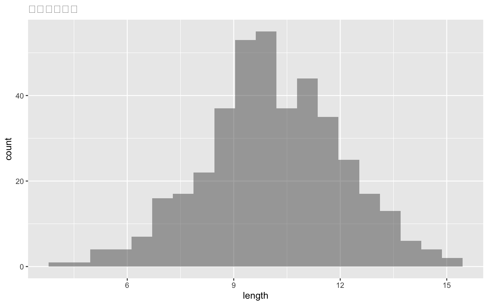
fish <- read.csv('2-2-1-fish.csv')
head(fish, n=3)## length
## 1 8.747092
## 2 10.367287
## 3 8.328743ggplot(data=fish, mapping=aes(x=length, y=..density..))+geom_histogram(alpha=0.5, bins=20)+geom_density(size=1.5)+labs(title='ヒストグラム')
library(gcookbook)
library(gridExtra)
p_hist<-ggplot(data=fish, mapping=aes(x=length))+geom_histogram(alpha=0.5, bins=20)+labs(title="ヒストグラム")
p_density<-ggplot(data=fish, mappin=aes(x=length))+geom_density(size=1.5)+labs(title="カーネル密度推定")
grid.arrange(p_hist, p_density, nrow=2)+theme(plot.title=element_text(family="Hirakaku"))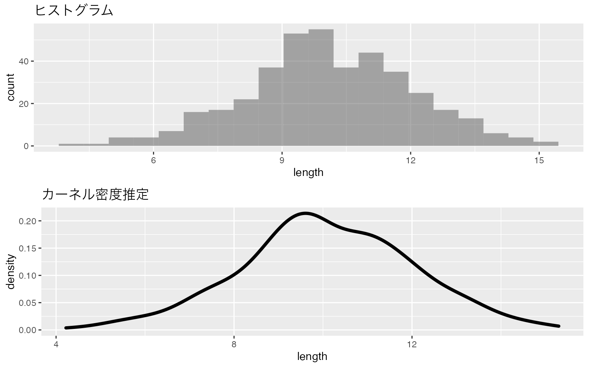
## NULL3.6 箱ひげ図とバイオリンプロット
- 箱ひげ図：四分位点、中央値 geom_boxplot
- バイオリンプロット geom_violin
3.7 散布図
- 2変数間の関係 geom_point
3.8 折れ線グラフ
- 時系列データ geom_line
2-3の補足：ggplot2の考え方(Rグラフィックブック付録A)
wideフォーマットとlongフォーマット
- 属性を縦と横に配置した表: wideフォーマット
library(gcookbook)
simpledat## A1 A2 A3
## B1 10 7 12
## B2 9 11 6* データが複数の列に入る- 1種類のデータは1列にまとまるべき
- reshapeパッケージ、melt()
library(reshape2)
longdat<-melt(simpledat)
longdat## Var1 Var2 value
## 1 B1 A1 10
## 2 B2 A1 9
## 3 B1 A2 7
## 4 B2 A2 11
## 5 B1 A3 12
## 6 B2 A3 6ggplotの用語
- データ：視覚化の対象、変数で構成される
- 幾何オブジェクト：描画されるもの。データを表現したもの。
- エステティック属性：幾何オブジェクトの視覚的プロパティ（x, yの位置、線の色など）
- マッピング：「データの値をエステティック属性にマッピングする」
- スケール：データ空間の値とエステティック空間の値との関係。
- ガイド：目盛りやラベル
基本的な使い方
- ggplot(データ, エステティック属性)+描画オブジェクト
- ggplot(longdat, aes(x=xval, y=yval))
- xvalがx軸に、yvalがy軸にマッピングされる
- geom_point()
- 上のものに幾何オブジェクトを足すと描画できる。この例では散布図。
- geom_point(aes(colour=group))
- このようにエステティック属性としてcolourを指定すると指定した属性を色にマッピングできる。
- +scale_x_continuous(limits=c(0,8))
- xの範囲を広げる
- print(オブジェクト）
- オブジェクトを明示的に表示
- ここまでの例。
- ggplot(longdat, aes(x=xval, y=yval))
library(ggplot2)
dat <- data.frame(xval=1:4,yval=c(3,5,6,9), group=c("A", "B", "A", "B"))
p<-ggplot(dat,aes(x=xval,y=yval))
p2<-p+geom_point(aes(colour=group))
p2+scale_x_continuous(limits=c(0,8))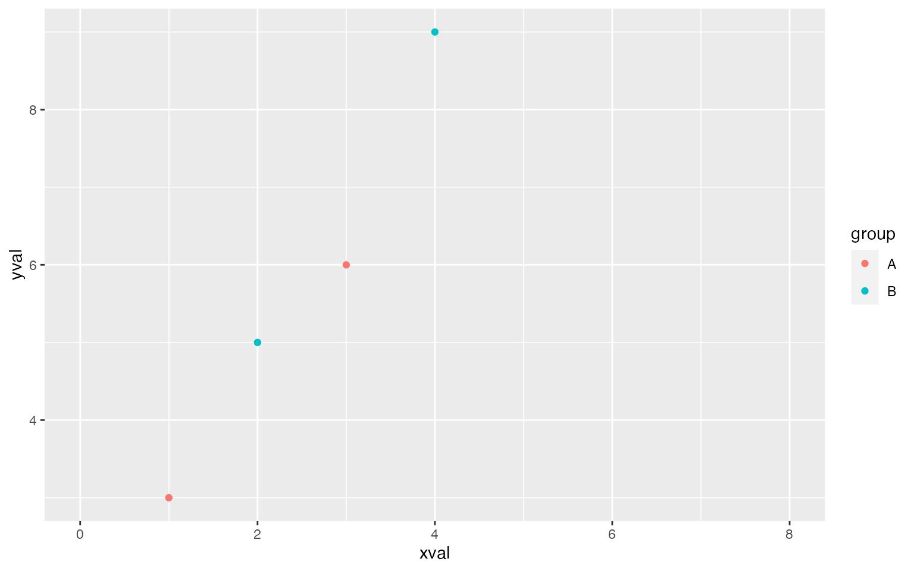
print(p2)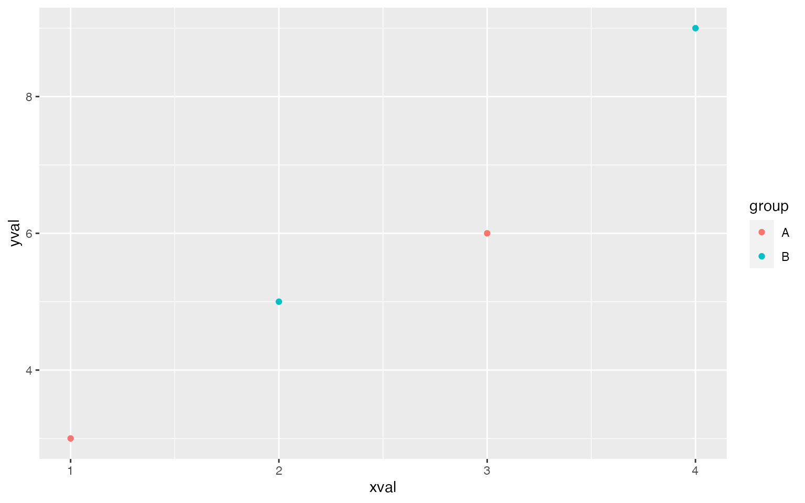
2-4章 Stanの基本
2. Stanのインストール
- done
3. サンプルとMCMCサンプル
- サンプル：抽出した標本
- MCMCサンプル：MCMCから得た乱数
4. ここで推定するモデルの構造
- ビールの売り上げ（1部5章5.5節）
- 売り上げ（単位：万円）を記録したデータ100個
- 売り上げデータは正規分布に従う
- 売り上げ平均\(\mu\), ばらつき\(\sigma\)
- \(sales \sim Normal(\mu, \sigma^2)\)
5. RとStan
- この本では
- R: 基本的なデータ処理
- Stan: MCMC
- Stanコード
- 拡張子stan
- textファイルを拡張子stanで保存
- RStudioでstanファイルを作成してもOK.構造が予め用意されている。
- この本でのベイズ統計モデリングデータ分析
- Rファイル
- Stanファイル（MCMC用）資料ではオレンジ色枠
- 標本が格納されたcsvファイル
6. Stanファイルの書き方
- 基本的な構造
- dataブロック: データ、サンプルサイズ
- parameterブロック：事後分布を得るパラメータ一覧
- modelブロック：事前分布、尤度
- 事前分布を指定しないと\((-\infty, \infty)\)の一様分布
7. Stanファイルの実装例
- 2-4-1-calc-mean-variance.stanというファイル名で作成
8. Rファイル実装の流れ
- 2-4-Stnの基本.Rを作成
- パッケージ読み込みなどの準備
- データ読み込みと確認
- list形式でデータをまとめる
- Stant連携、MCMC実行
- 結果確認
- 収束も確認
9. 分析の準備
- rstan_options(auto_write=TRUE)
- .rdsファイル生成
- 再度のコンパイルを不要にする
- options(mc.cores=)
- 計算の並列化。コンピュータのコア数に応じて指定してくれる。
- 基本的にどちらもいつも指定する
10. データ読み込み
- read.csv
- この例では確認は省略
11. list形式でデータをまとめる
- Stanファイルのデータブロックに必要なデータ数Nとデータsalesをlistにしておく
12. Stanと連携してMCMC実行
- stan関数
- 引数はP118の通り
- 実際にはMCMCサンプルは毎回異なるが、seed=1を指定することで固定。
library(rstan)## 要求されたパッケージ StanHeaders をロード中です##
## rstan version 2.26.3 (Stan version 2.26.1)## For execution on a local, multicore CPU with excess RAM we recommend calling
## options(mc.cores = parallel::detectCores()).
## To avoid recompilation of unchanged Stan programs, we recommend calling
## rstan_options(auto_write = TRUE)
## For within-chain threading using `reduce_sum()` or `map_rect()` Stan functions,
## change `threads_per_chain` option:
## rstan_options(threads_per_chain = 1)rstan_options(auto_write=TRUE)
options(mc.cores=parallel::detectCores())
file_beer_sales_1 <- read.csv("2-4-1-beer-sales-1.csv")
sample_size<-nrow(file_beer_sales_1)
data_list<-list(sales=file_beer_sales_1$sales, N=sample_size)
mcmc_result<-stan(
file="2-4-1-calc.mean-variance.stan",
data=data_list,
seed=1,
chains=4,
iter=2000,
warmup=1000,
thin=1
)13. 結果の確認
- print()でmcmcの戻り値を表示
- 求めるパラメータ, mu, sigma, lp__:対数事後確率
print(mcmc_result, probs=c(0.025,0.5,0.975))## Inference for Stan model: anon_model.
## 4 chains, each with iter=2000; warmup=1000; thin=1;
## post-warmup draws per chain=1000, total post-warmup draws=4000.
##
## mean se_mean sd 2.5% 50% 97.5% n_eff Rhat
## mu 102.22 0.03 1.83 98.61 102.23 105.79 3283 1
## sigma 18.19 0.02 1.27 15.93 18.12 20.98 2758 1
## lp__ -336.43 0.02 0.96 -338.94 -336.13 -335.48 1905 1
##
## Samples were drawn using NUTS(diag_e) at Wed Sep 29 12:39:28 2021.
## For each parameter, n_eff is a crude measure of effective sample size,
## and Rhat is the potential scale reduction factor on split chains (at
## convergence, Rhat=1).14. 収束の確認
- traceplot関数でstan関数の戻り値を処理
- 4回の結果（4つのチェーン）が重なっていればOK
- traceplot(mcmc_result, inc_warmup=T)
- バーンイン期間も表示
traceplot(mcmc_result)
15. ベクトル化
- \(sales[N] \sim normal(mu, sigma)\) をベクトルにする
- \(sales \sim normal(mu, sigma)\)
- わずかに結果が変わる
16. モデルの図式化
- モデルの構造を図式化
- グラフィカルモデル
- 実際のデータ：四角形
- 確率分布：円
- 確率的な関係：波線
- 確定的関係：実線
2-5章 MCMCの結果の評価
2. MCMCの実行
- 4章と同じ解析を実行
mcmc_result<-stan(
file="2-4-1-calc.mean-variance3.stan",
data=data_list,
seed=1,
chains=4,
iter=2000,
warmup=1000,
thin=1
)3. MCMCサンプルの抽出
- rstan::extract(): stanfitクラスからmcmcサンプルを抽出する
- mcmc_sample <- rstan::extract(mcmc_result, permuted=FALSE)
- 抜き出されたmcmc_sampleオブジェクトはarrayクラス、dimsは1000（iter数-wamup数), 4(chans数), 3(mu, sigma, lp__)となる。
- dim_names(mcmc_samples)で確認できる
- mcmc_sample[]で要素を見ることができる
- mcmc_sample[,,mu]だと\(\mu\)のMCMCサンプル全てを取り出せる
mcmc_sample<-rstan::extract(mcmc_result, permuted=FALSE)
class(mcmc_sample)## [1] "array"dim(mcmc_sample)## [1] 1000 4 3dimnames(mcmc_sample)## $iterations
## NULL
##
## $chains
## [1] "chain:1" "chain:2" "chain:3" "chain:4"
##
## $parameters
## [1] "mu" "sigma" "lp__"mcmc_sample[c(1:8),"chain:1","mu"]## [1] 104.0878 104.4901 102.4625 101.3802 102.5435 104.7143 100.2602 104.0725dim(mcmc_sample[,,"mu"])## [1] 1000 4class(mcmc_sample[,,"mu"])## [1] "matrix" "array"4. MCMCサンプルの代表値の計算
- 事後分布の代表値の計算
mu_mcmc_vec <- as.vector(mcmc_sample[,,"mu"])
median(mu_mcmc_vec)## [1] 102.2262mean(mu_mcmc_vec)## [1] 102.2221quantile(mu_mcmc_vec, probs=c(0.025, 0.975))## 2.5% 97.5%
## 98.6053 105.79185. トレースプロットの描画
- MCMCサンプルをもとにトレースプロットの描画
library(ggfortify)
autoplot(ts(mcmc_sample[,,"mu"]),
facets = F,
ylab = "mu",
main= "トレースプロット")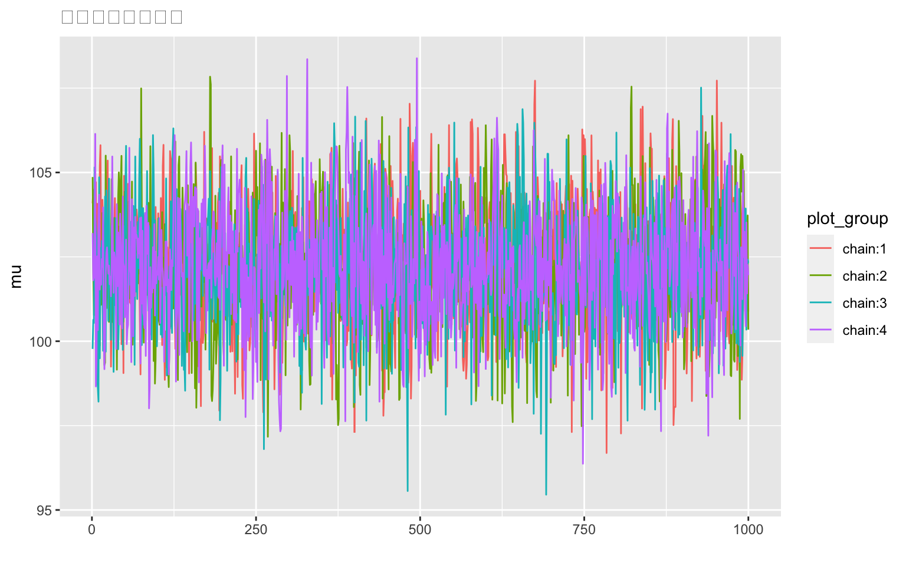 6. ggplot2による事後分布の可視化 * MCMCサンプルをまとめる＝パラメータの事後分布
mu_df <- data.frame(mu_mcmc_sample <- mu_mcmc_vec)
ggplot(data=mu_df, mapping=aes(x=mu_mcmc_sample))+geom_density(size=1.5)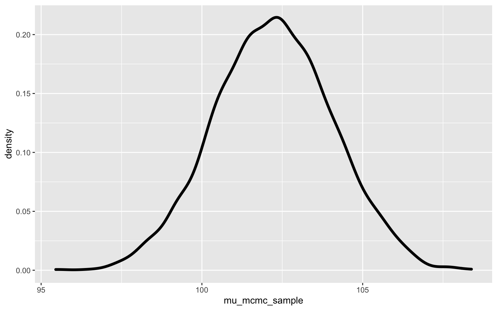 ## 7. bayesplotによる事後分布の可視化 * bayesplot便利
library(bayesplot)## This is bayesplot version 1.8.1## - Online documentation and vignettes at mc-stan.org/bayesplot## - bayesplot theme set to bayesplot::theme_default()## * Does _not_ affect other ggplot2 plots## * See ?bayesplot_theme_set for details on theme settingmcmc_hist(mcmc_sample, parc=c("mu", "sigma"))## Warning: The following arguments were unrecognized and ignored: parc## `stat_bin()` using `bins = 30`. Pick better value with `binwidth`.
mcmc_combo(mcmc_sample, parc=c("mu","sigma")) ## 8. bayesplotによる事後分布の範囲の比較 ## 9. bayesplotによるMCMCサンプルの自己相関の評価 * コレログラムも描ける
## 8. bayesplotによる事後分布の範囲の比較 ## 9. bayesplotによるMCMCサンプルの自己相関の評価 * コレログラムも描ける
10. 事後予測チェックの概要
- 推定されたモデルの総合的評価方法
- 例えば、仮定した事柄が現実的だったかどうか
- 事後予測チェックとは？
- 統計モデル：観測したデータを生み出す確率的な過程を簡潔に記述したもの
- ってことは、統計モデルをうまく推定できているなら、データとよく似たデータを生成できるはず
- モデルにしたがって観測データを擬似的に生成=事後予測分布/事後分布
- データと事後予測分布を比べる
- その方法の一つとしての「図示」
- 統計モデル：観測したデータを生み出す確率的な過程を簡潔に記述したもの
11. 事後予測チェックの対象となるデータとモデル
- 小動物の発見個体数
- 草原の中にランダムに個体が分布
- 試行回数が大きく、発生確率が小さい二項分布＝ポアソン分布
- 間違った分布として正規分布も考えてみる
animal_num<-read.csv("2-5-1-animal-num.csv")2-6. Stanコーディングの詳細
2. Stanファイルの構造
- Stanファイルの構成
- function
- data
- transformed data
- parameters
- transformed parameters
- model
- generated quntities
3. 変数の宣言
- 型と範囲
- int N
- real beta;
- real<lower=0> beta;
- int<lower=0, upper=1> range;
- ベクトル、配列の宣言
- ベクトル、行列
- 実数値型
- vector[3] retu;
- row_vector[10] gyou;
- matrix[3,2] mat;
- 配列
- ベクトルより柔軟、データ型を複数持てる
- int w[10];
- real x[3,4];
- vector[4] Y[2]; //4要素のベクトルを2つ持つ配列Y
- matrix[3,4] Z[5,6]; //3x4の行列を要素に持つ5x6の配列Z
- ベクトル、行列
4. 代入
- transformed dataブロックやtransformed parametersブロック
- = 代入演算子
5. サンプリング文
- modelブロック
- ビール売上の例
- 売上平均値のパラメータ\(\mu\), ばらつき\(\sigma^2\)
- 売上salesは平均\(\mu\), ばらつき\(\sigma^2\)の正規分布からサンプリングされたと想定
- \(sales \sim Normal(\mu, \sigma^2)\)
- N: サンプルサイズとして
- model{ for (i in 1:N){ sales[i] ~ normal(mu, sigma) } }
- 左辺ではデータでも、未知のパラメータでもOK
- muとsigmaの事前分布は指定できる
- model{ mu ~ normal(0, 1000000); sigma ~ normal(0, 1000000); for (i in 1:N){ sales[i] ~ normal(mu, sigma); } }
- 事前分布を変えたときに結果（＝事後分布）がどう変わってくるかの確認作業：感度分析
6. 弱情報事前分布の設定
- パラメータの範囲が“ある程度”分かっているとき
- “やや狭い”事前分布
- 例えば-5から5が想定されるとして、
- uniform(-5, 5)のように範囲が厳格に決まった一様分布よりも
- normal(0, 5)のような緩やかに範囲が決められる決め方が良い
- t分布が使われたりもする
- Prior Choice Recommendations参照
- 例えば-5から5が想定されるとして、
7. 対数密度加算文
- サンプリング文は対数密度加算文という形式でも実装可能
- 例えばmu, sigmaに従う正規分布にしたがって得られるデータ
- 対数密度加算文では
- model{ for (i in 1:N) target += normal_lpdf(sales[i]|mu, sigma); }
- targetに対して対数確率密度関数(log probability density function)を加算してるということ
- 離散型の場合、lpmf(log probability mass function)
- 事前分布として広い正規分布を与える場合
- model{ target += normal_lpdf(mu|0, 1000000); target += normal_lpdf(sigma|0, 1000000);
- ここでtargetはlp__(対数事後確率) }
- model{ target += normal_lpdf(mu|0, 1000000); target += normal_lpdf(sigma|0, 1000000);
8. 平均値の差の評価とgenerated quantitiesブロック
- モデル推定とは独立に乱数を得たい
library(ggplot2)
library(rstan)
file_beer_sales_ab<-read.csv("2-6-1-beer-sales-ab.csv")
ggplot(data=file_beer_sales_ab, mapping=aes(x=sales, y=..density.., color=beer_name, fill=beer_name))+geom_histogram(alpha=0.5,position="identity")+geom_density(alpha=0.5, size=0)## `stat_bin()` using `bins = 30`. Pick better value with `binwidth`.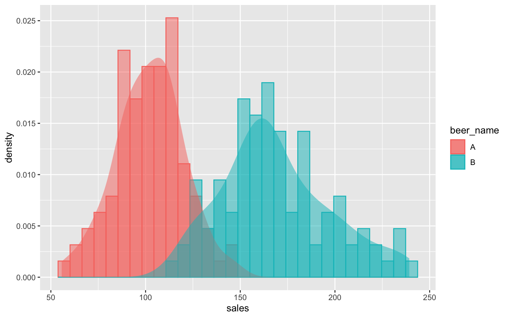
sales_a<-file_beer_sales_ab$sales[1:100]
sales_b<-file_beer_sales_ab$sales[101:200]
data_list_ab<-list(
sales_a=sales_a,
sales_b=sales_b,
N=100
)
mcmc_result_6<-stan(file="2-6-5-difference-mean.stan",
data=data_list_ab,
seed=1
)## Trying to compile a simple C file## Running /usr/local/Cellar/r/4.1.1/lib/R/bin/R CMD SHLIB foo.c
## clang -I"/usr/local/Cellar/r/4.1.1/lib/R/include" -DNDEBUG -I"/usr/local/lib/R/4.1/site-library/Rcpp/include/" -I"/usr/local/lib/R/4.1/site-library/RcppEigen/include/" -I"/usr/local/lib/R/4.1/site-library/RcppEigen/include/unsupported" -I"/usr/local/lib/R/4.1/site-library/BH/include" -I"/usr/local/lib/R/4.1/site-library/StanHeaders/include/src/" -I"/usr/local/lib/R/4.1/site-library/StanHeaders/include/" -I"/usr/local/lib/R/4.1/site-library/RcppParallel/include/" -I"/usr/local/lib/R/4.1/site-library/rstan/include" -DEIGEN_NO_DEBUG -DBOOST_DISABLE_ASSERTS -DBOOST_PENDING_INTEGER_LOG2_HPP -DSTAN_THREADS -DUSE_STANC3 -DSTRICT_R_HEADERS -DBOOST_PHOENIX_NO_VARIADIC_EXPRESSION -DBOOST_NO_AUTO_PTR -include '/usr/local/lib/R/4.1/site-library/StanHeaders/include/stan/math/prim/fun/Eigen.hpp' -D_REENTRANT -DRCPP_PARALLEL_USE_TBB=1 -I/usr/local/opt/gettext/include -I/usr/local/opt/readline/include -I/usr/local/opt/xz/include -I/usr/local/include -fPIC -Wno-implicit-function-declaration -c foo.c -o foo.o
## In file included from <built-in>:1:
## In file included from /usr/local/lib/R/4.1/site-library/StanHeaders/include/stan/math/prim/fun/Eigen.hpp:22:
## In file included from /usr/local/lib/R/4.1/site-library/RcppEigen/include/Eigen/Dense:1:
## In file included from /usr/local/lib/R/4.1/site-library/RcppEigen/include/Eigen/Core:88:
## /usr/local/lib/R/4.1/site-library/RcppEigen/include/Eigen/src/Core/util/Macros.h:628:1: error: unknown type name 'namespace'
## namespace Eigen {
## ^
## /usr/local/lib/R/4.1/site-library/RcppEigen/include/Eigen/src/Core/util/Macros.h:628:16: error: expected ';' after top level declarator
## namespace Eigen {
## ^
## ;
## In file included from <built-in>:1:
## In file included from /usr/local/lib/R/4.1/site-library/StanHeaders/include/stan/math/prim/fun/Eigen.hpp:22:
## In file included from /usr/local/lib/R/4.1/site-library/RcppEigen/include/Eigen/Dense:1:
## /usr/local/lib/R/4.1/site-library/RcppEigen/include/Eigen/Core:96:10: fatal error: 'complex' file not found
## #include <complex>
## ^~~~~~~~~
## 3 errors generated.
## make: *** [foo.o] Error 1print(mcmc_result_6, probs=c(0.025, 0.5, .0975))## Inference for Stan model: anon_model.
## 4 chains, each with iter=2000; warmup=1000; thin=1;
## post-warmup draws per chain=1000, total post-warmup draws=4000.
##
## mean se_mean sd 2.5% 50% 9.75% n_eff Rhat
## mu_a 102.16 0.03 1.84 98.40 102.16 99.77 4088 1
## sigma_a 18.20 0.02 1.36 15.78 18.08 16.52 3880 1
## mu_b 168.85 0.04 2.90 163.02 168.85 165.12 4168 1
## sigma_b 29.14 0.03 2.15 25.25 29.04 26.47 3934 1
## diff 66.68 0.05 3.46 59.68 66.74 62.17 4291 1
## lp__ -719.48 0.03 1.49 -723.28 -719.12 -721.49 1835 1
##
## Samples were drawn using NUTS(diag_e) at Wed Sep 29 12:40:08 2021.
## For each parameter, n_eff is a crude measure of effective sample size,
## and Rhat is the potential scale reduction factor on split chains (at
## convergence, Rhat=1).